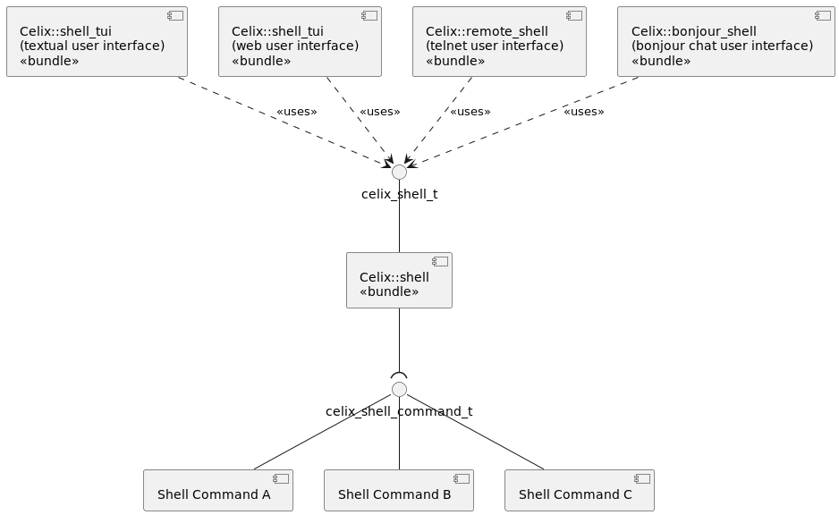
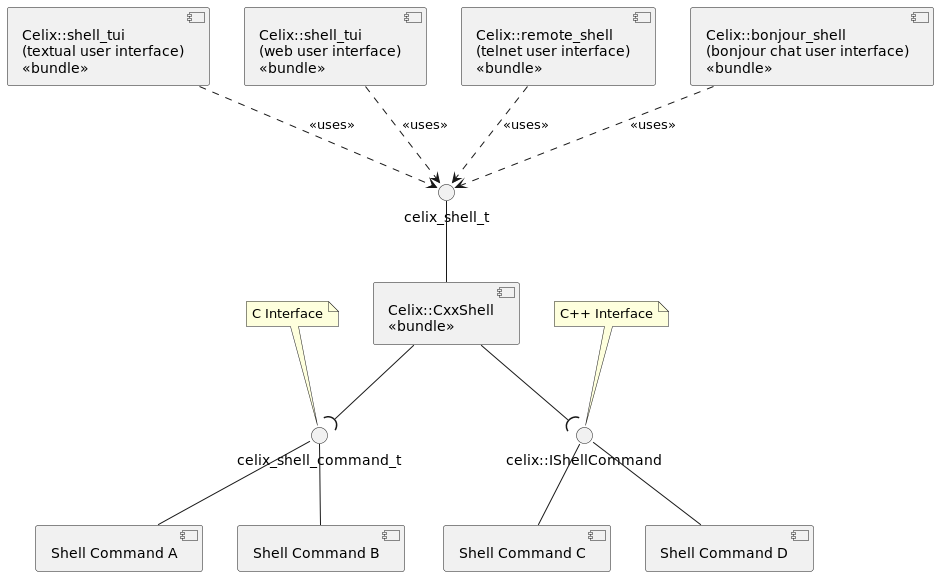

The Celix Shell provides a service interface which can be used to interact with the Celix framework. It uses a modular approach to enable multiple frontends, e.g. textual or graphical.
While the shell can be extended with additional commands by other bundles, it already offers some built in commands, for example:
lb: list bundlesinstall: install additional bundleuninstall: uninstall bundlesstart: start bundlestop: stop bundlehelp: displays available commandsFurther information about a command can be retrieved by using help combined with the command.
The Celix Shell functionality is achieved by 3 service interfaces. These interfaces are available through the
Celix::shel_api CMake INTERFACE library target.
celix_shell_t: The shell service can be used to get an overview of the available shell commands and to execute
shell commands.celix_shell_command_t: A C service interface to provide an additional shell command to the shell.celix::IShellCommand: A C++ service interface to provide an additional shell command to the shell.The complete Celix shell functionality is provided by serveral bundles:
Celix::shell : The core shell which offer a celix_shell_t service and uses celix_shell_command_t services.Celix::CxxShell : The core C++ shell which offers a celix_shell_t service and uses both celix_shell_command_t
and celix::IShellCommand services. Offers the same functionality as Celix::shell, but also supports C++
celix::IShellCommand services.Celix::shell_tui : Textual (terminal) user interface to the shell service.Celix::shell_wui : Web user interface to the shell service.Celix::remote_shell : Remote telnet interface to shell serviceCelix::bonjour_shell: Chat interface to the shell service using bonjour. Warning not mature and still unstable. When used it should be possible to chat to a Celix shell using Linux’s pidgin application or OSX’s
Messages application.|

Celix::shell. Default is true.Celix::shell_tui. Default is true if a TERM environment is set else false.Celix::remote_shell. Default is 6666.Celix::remote_shell. Default is 2.If the Celix Shell is installed, find_package(Celix) will set:
Celix::shell_api interface (i.e. header only) library targetCelix::shell bundle targetIf the Celix Shell TUI is installed, find_package(Celix) will set:
Celix::shell_tui bundle target if the shell_tui is installedIf the Celix Shell WUI is installed, find_package(Celix) will set:
Celix::shell_wui bundle target if the shell_wui is installed